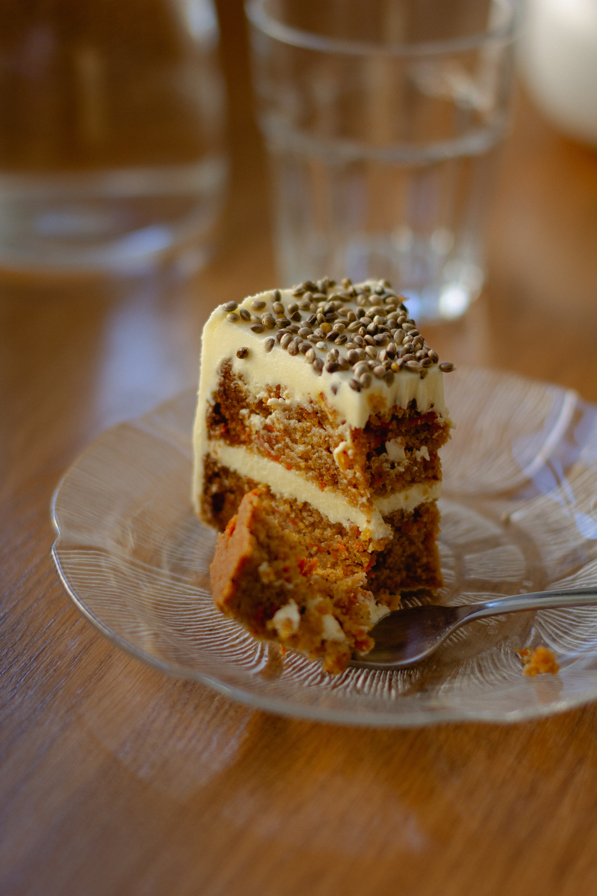

recette du gateau a la carotte 🍰

ingredients
4 carottes;
1 tasse de d'ananas decoupes en de
3 oeufs;
1 pot et demi de sucre;
2 pots et demi de farine;
2 cas de poudre d'amandes;
1 cas de poudre de cannelle;
1/2 pot d'huile;
1 sachet de levure chimique;
preparation
1_Commencer par emincer vos carottes, puis mixer votre ananas.
2_dans un saladier blanchissez les oeufs et le sucre puis ajouter l'huile, la levureet en derniere position la farine,la poudre d'amandes et poudre de cannelle.
3_melanger vos carrotes, votre ananas et votre patte puis verser le melange dans un moule prealablement recouvert de papier cuisson .
4_enfournez a 180 degres pendant 45mn.
5_c'est pret ⚡